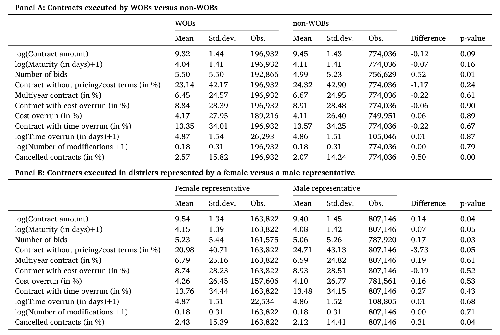
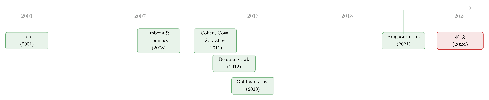

把「她」放进国会，谁的订单变多了？——女性政治家与政府采购里的性别缺口
本文读的是 Brogaard, Gerasimova & Rohrer (2024, Journal of Financial Economics)：当一个国会众议院选区的代表从男性换成女性，这个选区流向女性所有企业 (women-owned businesses, WOBs) 的政府采购合同概率会上升约 4.5 个百分点。作者用「混合性别选举」的断点回归把这件事做成了因果，并且层层排除供给侧解释，最后把它落在一个朴素却有力的机制上——需求侧：女议员手里那支「钱袋子」与「监督权」，悄悄改写了谁能拿到联邦政府的订单。
1 引言：全世界最大的那个「客户」
先抛一个也许会让你愣一下的数字：全世界单体最大的买家，不是沃尔玛，也不是亚马逊，而是美国联邦政府。仅 2020 财年，它的采购支出就超过了 $665 billion。任何一家小企业，只要能挤进这张「客户名单」，往往就意味着长期的存活、雇佣的增长，以及融资约束的松动。
但这张名单上，女性是被系统性地少分了的。作者给出的对照触目惊心：2008–2020 年间，只有 9% 的政府合同流向了女性所有企业，而美国 36% 的小企业是女性持有的。换句话说，按企业占比，女性「应得」的份额是三分之一强，实际拿到的不到十分之一。商务部一份报告甚至算过，在其他条件相似的情况下，一家女性所有企业赢得联邦合同的几率要低约 21%。
这里要先说清楚一个容易混淆的概念。本文研究的不是「女性当选后，国会通过了多少替女性说话的法案」——那是立法 (legislative) 层面、需要集体行动的政治。本文盯住的是一件更细、更可追溯的事：单个选区的女议员，如何影响单笔合同流向单个女性企业主。立法是「立法者集体」的产物，而采购合同可以一对一地链接到「某个议员—某个承包商」。这正是这篇论文能做因果的地基。
于是，一个自然的问题浮上来：女性政治家的当选，本身会不会松动这道性别缺口？ 如果会，那它是怎么发生的？
2 识别策略：在「刚好选上」的那条缝里做实验
谁当选从来不是随机的。一个选区选出女议员，背后是选民结构、政党版图、经济基本面的合力——直接把「有没有女议员」和「合同有没有给女企业」做相关，几乎一定会被各种遗漏变量污染。
作者的办法，是金融与政治经济学里那套经典的断点回归 (regression discontinuity design, RDD)，运用在所谓的混合性别选举 (mixed-gender elections) 上：一场选举里，候选人恰好一男一女。当得票差距趋近于零时，谁赢谁输高度不确定，胜负几乎是被「抛硬币」决定的——也就是说，在门槛附近，当选者的性别可以被当作外生地、近乎随机地分配（这正是 Lee (2001, 2008) 与 Imbens & Lemieux (2008) 奠定的逻辑）。
样本横跨第 109 到第 116 届国会，共 3,473 场普选加 9 场特别选举，其中 1,055 场是男女对决。主回归把窗口收在得票差 30% 以内，落入这个带宽的混合性别选举有 564 场。
接着，是一连串「让人放心」的检验：
- 密度连续性：McCrary (2008) 检验确认，得票差的分布在门槛处是连续的——没有人能精准地「操纵」到刚好赢半个身位，排除了 sorting。
- 协变量平衡：女性赢下的选区，与男性赢下的选区，在选前的诸多维度上高度相似——选区产出、对女性的隐性偏见、选区里女性承包商的存量，统统对得上。
- 饱和的固定效应：完整设定里塞进了
state × year、awarding agency × year、以及product/service type × year三层固定效应。也就是说，比较的是「同一个州、同一年、同一个采购机构、同一类产品/服务」之下，女议员选区与男议员选区的差别。 - 安慰剂 (placebo)：把胜选者的性别随机打乱后重做回归，效应消失——这恰恰是我们希望看到的。
RDD 最迷人的地方就在于此：它不要求「女议员选区」和「男议员选区」整体可比，只要求在门槛的极小邻域内两者可比。代价是外部有效性——估计的是「势均力敌的混合选举」这一局部，而非全体。后面我们会回到这个 caveat。
3 数据：把九十七万份合同摊开
识别策略再漂亮，也要有足够细的数据来喂。作者合并了两套数据：
其一，联邦采购合同，来自 FPDS-NG（Federal Procurement Data System-Next Generation）。政府的透明度规则在这里成了研究者的福利——每一笔合同的金额、期限、产品描述，乃至企业主的性别，都可以查到。作者聚焦于小企业「预留 (set-aside)」项目下的、条款明确的一次性合同（definitive contracts, DCs），共 970,968 份。为什么是小企业？因为 94% 的女性所有企业本就是小企业，而小企业承载了美国 47% 的私营部门就业。
其二，国会选举结果，用来标定每个选区的代表性别与得票差。
下面这张表给出了采购合同与选区层面的描述性统计——合同金额、期限、投标数、是否多年期合同，以及核心的 WOB 占比，都在其中。

Table 1: provides summary statistics of procurement contracts be-
值得一提的是，政府合同对这些企业绝非可有可无：样本里中位数的女性所有企业年收入约 $1.1 million，其中 9% 来自政府采购；而对 26% 的女性企业而言，光是 SBA 项目下的政府合同，就占到了它们收入的一半以上。订单的得失，对它们是生死攸关的事。
4 主要结果：4.5 个百分点，与一笔 69 亿美元的转移
核心结果一句话：选区代表从男性换成女性，该选区一份政府合同被授予女性所有企业的概率，上升约 4.5 个百分点，在 1% 水平上显著，且在各种设定下经济量级稳定。
4.5 个百分点听起来抽象，作者给了两把尺子来丈量它：
- 横向比：作为参照，全美 SBA 合同中流向女性企业的份额，在
2005到2020这十五年里也才上升了11个百分点。一次「男换女」的当选，单点就撬动了4.5个百分点——这不是一个可以忽略的边际。 - 总量比：一个针对 2020 财年的「信封背面」估算显示，女性代表性带来的，是大约
$6.9 billion从非女性企业向女性企业的采购转移。
那么，这 4.5 个百分点到底是怎么长出来的？这正是全文真正的胜负手。
5 真正关键的一步：是「供给」变了，还是「需求」变了？
任何看到主结果的人，都会立刻分出两条解释路径：
- 供给侧 (supply-side)：女议员当选，激励了更多女性去创业、去注册、去投标，于是池子里的女企业变多了，自然拿到更多合同；
- 需求侧 (demand-side)：池子没变，是政府这一侧——在女议员的影响下——主动把更多合同分给了女企业。
这两条路径在政策含义上天差地别。如果是供给侧，那女议员的价值在于「榜样效应」；如果是需求侧，那才是「权力直接重新配置了订单」。作者用了三记重拳，把供给侧基本敲掉：
第一，承包商池子没动。 作者用承包商的历史快照（这份数据没有幸存者偏差，能捕捉所有潜在承包商，而不只是中标过的）证明：女议员的当选，并没有改变承包商总体的数量、没有让承包商向女议员选区迁移、也没有改变它们登记为「女性所有」的状态。
第二，投标人数没增加。 女议员当选，并未抬高某份合同的投标者数量。供给侧若要成立，必须假设「多出来的女企业投标」恰好被「等量减少的非女企业投标」一对一抵消——这太巧了，不太可信。
第三，也是最干净的一击——时间太快了。 主效应在选举后 180 天内就已经出现。可作为参照，一家公司从注册到签下与国防部的第一份合同，平均要花 18 个月。一边是半年内见效，一边是一年半才入门——供给根本来不及反应。
三证合一，反转出现：驱动 4.5 个百分点的，是需求侧，是政府主动的再配置。
6 需求侧的「解剖」：钱袋子与监督权
确认了是需求侧，下一个自然的问题是：女议员究竟凭什么能影响合同的分配？作者把这只「手」一层层剥开。
它是持续的，也是可逆的。 一次「男→女」的更替会抬高对女企业的合同分配，而一次「女→男」的更替则会把它压下去。如果是女议员接替女议员，只有当胜者是在任者 (incumbent) 时，分配才继续上升——这与「议员影响力随任期增长」高度一致。这也解释了引言里那个观察：效应随女议员的任期逐年变强。
它来自委员会的权力。 真正点睛之笔在这里：效应集中在那些坐进了有实权委员会的女议员身上。作者借用 Cohen et al. (2011) 对「有权势委员会」的定义、以及 Brogaard et al. (2021) 对关键预算与监督委员会的刻画，发现——坐在预算委员会（钱袋子的权力，power of the purse）和监督委员会（监督的权力，power of oversight）上的女议员，影响最为显著。
这就把整条逻辑闭合了：任期越长 → 越可能进有权委员会 → 对采购分配的影响越大。机制与动态、与「持续且可逆」的证据，严丝合缝地咬在一起。
还有两个值得记下的细节。其一，作者排除了地方关系网络 (local networks) 的解释——不是女议员把订单「送给老乡」。其二，论文里一个有点反直觉的结果：共和党女议员的效应，显著大于民主党女议员。一个通常被贴上「更关注性别议题」标签的党派，反而不是推动这件事的主力。
7 那么，代价呢？
读到这里，一个挑剔的读者一定会追问：把更多订单「定向」给女企业，会不会以牺牲政府采购的成本与质量为代价？毕竟「照顾」二字，常常意味着效率的让渡。
作者的数据恰好能直接回答。他们从两头看：
- 事前的合同条款：没有证据表明女议员选区对女企业更「宽松」（金额、期限上并无系统性偏袒）；
- 事后的履约表现：用成本超支、时间超支、修改次数、合同取消概率等多维度衡量，找不到女企业拿到更多合同后履约变差的证据。
更进一步，把镜头转向企业本身：拿到政府合同，能预测女企业后续两年在收入、雇员数、信用评分上的增长。换句话说，这不是一笔「为了公平而烧掉效率」的买卖——更性别均衡的采购，并没有伴随可见的经济成本。
（关于「政府的小企业扶持项目里那道挥之不去的人口学缺口」，可对照参见《银行不肯放的款，黑人餐馆只能去金融科技公司「绕路」》——那篇讲的是种族，这篇讲的是性别，但底层的张力是同一个：政府的扶持，为什么总是难以均匀地落到每一类人头上。）
8 文献脉络：从「close election」的方法论，到「钱袋子」的政治经济学
把这篇论文放回它生长的土壤里，会看得更清楚。它其实是三股河流的汇合。
第一股，是方法论的河。 用「势均力敌的选举」做断点、把胜负当作准随机分配，这套手艺由 Lee (2001, 2008) 立起骨架，又被 Imbens & Lemieux (2008) 写成了实践指南。没有这套工具，「女性当选」的内生性几乎无解。
第二股，是「更多女性进入政治会改变什么」的河。 早期文献多在发展中国家做：Beaman et al. (2012) 发现印度的女性领导提升了女孩的志向与受教育程度；Ghani et al. (2014) 把印度的女性政治配额与制造业里的女性创业联系起来。在美国语境下，Gerrity et al. (2007)、Volden et al. (2018) 等指出女政治家更支持惠及女性选民的立法。本文的增量在于：把这种「支持」从立法延伸到了非立法的行政行为——政府支出的再配置。

第三股，是「政治家如何影响合同分配」的河。 这一脉里，企业与政治家的联系——常以竞选捐款为代理——被反复证明能提高拿到合同的概率（Goldman et al., 2013; Schoenherr, 2019），并影响合同条款（Ferris et al., 2019; Brogaard et al., 2021）。本文与它们的分野有二：其一，这里的「联系」不是金钱或人脉，而是共享的性别；其二，这种联系没有带来对「关连承包商」的优待——女企业拿到了更多订单，却没有拿到更甜的条款。
三河交汇处，正是 Brogaard, Gerasimova & Rohrer (2024) 的位置：用最干净的因果工具，回答一个旧问题（女性进入政治改变了什么），却给出一个新答案（通过采购需求这条「客户渠道」）。
9 评论与延伸（Q&A + 研究方向）
(a) 几个可能的疑问
Q：4.5 个百分点，会不会其实是「女议员选区里本来就女企业多」造成的？
不太可能。RDD 的逻辑正是为了对付这个——它只比较门槛极小邻域内、势均力敌的混合选举里「刚好女赢」与「刚好男赢」的选区，而协变量平衡检验显示二者在选前（含选区里女性承包商的存量）高度相似。再加上
state×year、agency×year、product×year三层固定效应，「选区本来就不同」这条路被堵得相当死。
Q：作者怎么这么有把握说是需求侧而不是供给侧？
靠三条互相印证的证据：承包商池子（无幸存者偏差的历史快照）不变、投标人数不变、以及效应在
180天内就出现而成为承包商平均要18个月。任何一条单独都不致命，但三条合起来，供给侧「来不及、也没发生」。
Q：共和党女议员效应反而更大，这是不是有点反直觉？
确实反直觉。一个解读是：本文的机制是「权力」而非「意识形态」——关键在于女议员是否坐进了预算/监督委员会、是否有足够任期，而非她替女性「发声」的意愿。把这件事理解成「权力的再配置」而非「价值观的表达」，这个反差就顺了。
Q：把合同「定向」给女企业，难道真的一点效率都不损失？
至少在可观测的维度上看不到损失。事前条款（金额、期限）没有偏袒，事后履约（成本/时间超支、修改、取消）也没变差，而拿到合同的女企业后续两年在收入、雇员、信用分上还更好。当然，这是「没有发现成本」，不等于「证明了零成本」——未观测维度（如质量的隐性下降）仍是开放问题。
Q：这套结论能外推到参议院、州政府，甚至别的国家吗？
谨慎。RDD 估计的是「势均力敌的混合性别众议院选举」这个局部，对压倒性选区、对参议院（席位少、权力结构不同）、对制度迥异的他国，外推都需要额外假设。把它当作一个干净的存在性证明（女性领导确能通过采购需求改变分配），而非一个普适弹性，更稳妥。
Q：和「政治关连提高中标概率」那一脉相比，本文新在哪？
旧文献里的「联系」是金钱/人脉，且通常伴随对关连方的优待（更好的条款）。本文的「联系」是共享性别，且不伴随优待。这把「政治影响合同」从一个寻租 (rent-seeking) 故事，拓展成了一个「代表性如何重塑配置」的故事。
(b) 几个可能的研究问题与提案
1）女企业拿到政府订单后，能不能更便宜地发债/借款？
【经济故事】政府合同是高信用、可预期的现金流，理论上能直接放松企业的融资约束（Hebous & Zimmermann, 2021 已在投资上看到这点）。但它对信用市场定价的作用——利差、评级、银行贷款利率——尚少有人用这种干净的外生冲击去量。 【可行性】中。难点在于绝大多数中标的女性小企业并不发公开债；可退而求其次，用银行贷款数据（如 DealScan 的下沉样本或监管贷款数据）或商业信用评分，把「中标」作为准随机事件（仍借混合性别选举的 RDD）做事件研究。数据可得性是主要瓶颈。
2）外资持有人会不会「读」出这种政治驱动的再配置？
【经济故事】如果女议员上台系统性地改变了一个地区/行业的政府订单流向，那受益与受损的上市供应商，其现金流前景就被改写了。一个有意思的问题是：外资机构相对本土机构，是更慢还是更快地把这种「政治微观结构」信息计入持仓与定价？这关系到外资是否在本土政治信息上处于劣势。 【可行性】中。需要把 FPDS-NG 的承包商匹配到上市母公司，再叠加 13F/FactSet 的持有人国别。匹配是脏活，但可做；识别可借选举 RDD 提供的外生时点。
3）「需求侧再配置」会不会外溢到二级供应链与公司债利差？
【经济故事】拿到大额政府合同的女企业，会向上游采购、向银行融资，冲击未必止于一级承包商。若能追踪到承包商的供应链网络，就能看「政治驱动的需求冲击」如何沿链条传导，并最终反映在相关企业的债券流动性与利差上。 【可行性】低到中。供应链数据（如 FactSet Revere）与小企业层面的合同匹配难度大，且二级供应商多为非上市，信用市场可观测性差。更现实的做法是限定在「承包商恰为上市公司」的子样本里做。
4）把性别换成其他维度：退伍军人、少数族裔企业的「代表性—采购」弹性一样吗？
【经济故事】本文的机制是「代表与受益者共享某种身份」。那么当选者若是退伍军人、或某少数族裔，是否同样会抬高对应类别企业（SDVOSB、minority-owned）的合同分配？比较不同身份维度的弹性，能检验「共享身份」机制的普适性。 【可行性】中到高。FPDS-NG 本就标记了 SDVOSB、HUBZone 等类别，候选人的相应身份也多可手工编码；识别仍可沿用 close-election RDD。是本文最自然、最 doable 的延伸。
10 我的判断
贡献上，这篇论文做对了三件难事：一是把一个「软」问题（女性进入政治改变了什么）硬化成了一个可因果识别的设计；二是没有止步于「有效应」，而是用承包商快照、投标人数、180 天的时间窗，把供给侧解释逐一证伪，干净利落地把球落到需求侧；三是用委员会权力—任期—可逆性的三角，给「需求侧到底是什么」提供了可检验、且自洽的机制。在性别与政治经济学的交叉处，这是一篇方法与故事都站得住的样板。
对识别的担忧，我有两点。其一是外部有效性：RDD 估计的是势均力敌的混合性别选举这一局部，对绝对优势选区、对参议院、对他国，外推需谨慎——这不是缺陷，而是这类设计与生俱来的边界，但读者容易忘记。其二是「无成本」的解读：作者诚实地报告了「找不到」经济成本，但「没有发现」不等于「不存在」——质量的隐性维度（比如难以量化的服务可靠性）未必进得了 FPDS-NG 的字段。把结论稳健地表述为「在可观测维度上未见显著成本」会更准确。
后续想看到的，是把这条「客户渠道」一路推到信用市场：拿到政府订单的女企业，融资成本到底降了多少？它们的银行贷款利率、商业信用分、乃至（若发债）债券利差，是否真的因这份准随机的「政府背书」而改善？这才是把「政治如何重配订单」与「企业真实的财务韧性」连起来的最后一公里。
参考文献
- Beaman, L., Duflo, E., Pande, R., Topalova, P. (2012). Female leadership raises aspirations and educational attainment for girls: a policy experiment in India. Science 335, 582–586.
- Brogaard, J., Denes, M., Duchin, R. (2021). Political influence and the renegotiation of government contracts. Review of Financial Studies 34(7), 3095–3137.
- Brogaard, J., Gerasimova, N., Rohrer, M. (2024). The effect of female leadership on contracting from Capitol Hill to Main Street. Journal of Financial Economics 155, 103817.
- Cohen, L., Coval, J., Malloy, C. (2011). Do powerful politicians cause corporate downsizing? Journal of Political Economy 119(6), 1015–1060.
- Ferris, S.P., Houston, R., Javakhadze, D. (2019). It is a sweetheart of a deal: political connections and corporate-federal contracting. Financial Review 54(1), 57–84.
- Gerrity, J.C., Osborn, T., Mendez, J.M. (2007). Women and representation: a different view of the district? Politics & Gender 3, 179–200.
- Ghani, E., Kerr, W.R., O'Connell, S.D. (2014). Political reservations and women's entrepreneurship in India. Journal of Development Economics 108, 138–153.
- Goldman, E., Rocholl, J., So, J. (2013). Politically connected boards of directors and the allocation of procurement contracts. Review of Finance 17(5), 1617–1648.
- Hebous, S., Zimmermann, T. (2021). Can government demand stimulate private investment? Evidence from U.S. federal procurement. Journal of Monetary Economics 118, 178–194.
- Hvide, H.K., Meling, T.G. (2023). Do temporary demand shocks have long-term effects for startups? Review of Financial Studies 36(1), 317–350.
- Imbens, G.W., Lemieux, T. (2008). Regression discontinuity designs: a guide to practice. Journal of Econometrics 142, 615–635.
- Lee, D.S. (2008). Randomized experiments from non-random selection in U.S. House elections. Journal of Econometrics 142, 675–697.
- McCrary, J. (2008). Manipulation of the running variable in the regression discontinuity design: a density test. Journal of Econometrics 142, 698–714.
- Volden, C., Wiseman, A.E., Wittmer, D.E. (2018). Women's issues and their fates in the US Congress. Political Science Research and Methods 6(4), 679–696.